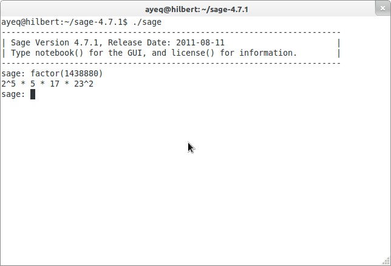
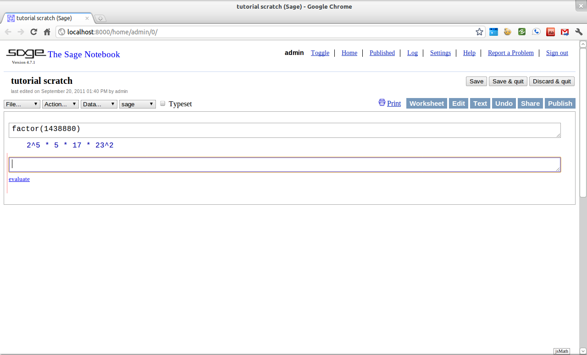
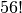
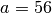
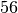

About this tutorial¶
Introduction¶
How to use this tutorial¶
This tutorial is divided into four parts. This part, About this tutorial, discusses some basic properties of Sage, introduces you to the structure of the tutorial, and explains how to contribute to the project if you so desire.
The second part, Sage as a Calculator, covers topics such as how to do arithmetic, evaluate functions, create simple graphs, solve equations and do basic calculus. We call this section Sage as a Calculator because most of the topics covered are those that are commonly done with a standard graphing calculator. The target audience for this section is any motivated pre-calculus or calculus student.
Programming in Sage introduces the reader to some more advanced topics such as how Sage handles numbers; how to define and use variables and functions; how to manipulate lists, strings, and sets; and Sage universes and coercion.
The final part, Mathematical Structures, introduces the reader to topics that one finds in a college level curriculum: linear algebra, number theory, groups, rings, fields, etc.
Since this is a tutorial introduction to Sage, we will be using examples to demonstrate ideas and the reader is encouraged to follow along as we progress by entering the commands into their own copy of Sage. We have tried to include exercises for practice and problems for more extensive exploration of a given topic. The reader is also encouraged to do many of these.
While the tutorial mostly progresses in a linear fashion, we still include at the beginning of each section a list of the most important prerequisite topics. This list follows the text “You should be familiar with.” and by clicking one of these links you will be taken to the relevant portion of the tutorial. We have also tried to include links to further information and other on-line references. These will follow the “See also:” text.
Some sections may contain numbered citations such as “[1].” The list of these citations will be at the bottom of a section with at least one citation. These citations will direct the reader to texts which contain more information about the topic being presented.
References:
| [1] | William A. Stein et al. Sage Mathematics Software (Version 4.7.1), The Sage Development Team, 2011, http://www.sagemath.org. |
Getting Started¶
About Sage¶
Sage is a free open source mathematical software system based on the Python programming language. Originally created for research into mathematics, it has been evolving into a powerful tool for math education. It combines numerous other mathematical software packages with a single interface, using the Python programming language. By learning Sage, you are also learning a lot about Python.
As an open source project, Sage invites contributions from all of its users. This tutorial is one of many sources of information for learning about how to use Sage. For more information see the Sage project’s website.
This tutorial assumes that the reader has access to a running copy of Sage. On most operating systems, installing Sage usually consists of downloding the proper package from the project’s main website, unwrapping it, and executing sage from within. For more information on the process of installing sage see Sage’s Installation Guide.
Once it has been installed and started, Sage has two ways to enter commands, either from the command line or by using the web-based notebook. The notebook interface is similar in design to the interface of Matlab, Mathematica, or Maple and is a popular choice.
Everything that follows the sage: prompt is a command that we encourage the reader to type in on their own. For example, if we wanted to factor the integer we would give the following example using Sage’s factor() command.
sage: factor(1438880)
2^5 * 5 * 17 * 23^2
The line after the sage: contains the output that the user should expect after properly entering the command.
From the command line the interaction would probably look a bit like this:
{kind=link}
If the user is using the notebook (most likely) the interaction will look a little like:
{kind=link}
Tab Completion¶
Next we will discuss how to use a couple of important features of both interfaces; tab-completion and the built-in help system.
One of the handiest features built into Sage is tab completion of commands. To use tab completion, just type in the first couple of letters of the command that you would like to use, and then the tab-key. For example, suppose that you wanted to compute  and don’t remember the exact command name to do this. A good guess is that the command will have factorial somewhere in it’s name. To see if that guess is correct, just type the first three letters fac and hit the tab-key.
sage: fac[TAB]
factor factorial
sage: factor
The output tells you that only two Sage commands begin with fac, factor() and factorial(). Note that Sage has already changed the command from fac to factor because this is the common root of both commands. Since factorial looks like the correct command we will select this by typing the next letter, i, and hitting the tab key again.
sage: factorial
This time no list is returned because the only command that begins with factori is factorial(). So to compute you just complete the command by adding the argument (56).
sage: factorial(56)
710998587804863451854045647463724949736497978881168458687447040000000000000
Another good use of tab-completion is to discover what methods an object has. Say you have the integer  and you were wondering which commands Sage offers for working with integers like . In this case the  is our object and we can find all of the methods associated with integers by typing a. then hitting the tab-key.
is our object and we can find all of the methods associated with integers by typing a. then hitting the tab-key.
sage: a = 56
sage: a.[TAB]
a.N a.kronecker
... A long list of Commands ...
a.divisors a.parent
a.dump a.popcount
a.dumps a.powermod
a.exact_log a.powermodm_ui
--More--
Do not be intimidated by the length of this list. Sage is a very powerful system and it can do a lot with integers. On the command line, the --More-- at the bottom of the screen tells you that the list of possible commands is longer than what will fit on a single screen. To scroll through this list a page at a time, jut hit any key and Sage will display the next page.
On the second page you see that factor() is an option. To use this method, which factors into unique prime factors, you enter a.factor().
sage: a.factor()
2^3 * 7
Tab-completion can not only reduce the amount of typing needed, but it can be used to discover new commands in Sage.
Help using ?¶
Once you have identified a command that interests you, the next step is to find out exactly what this command does and how to use it. Sage has a built-in help system to help you achieve this very goal.
Let’s suppose that you wish to compute the lowest common multiple of two integers and are not sure which command does this. A good place to begin the search is by typing l at the command prompt and then hitting the tab-key.
sage: l[TAB]
laguerre list_plot3d
lambda lk
laplace ll
latex ln
lattice_polytope lngamma
lazy_attribute load
lazy_import load_attach_path
lc load_session
lcalc loads
lcm local/LIB
ldir local/bin
...
lisp_console ls
list lucas_number1
list_composition lucas_number2
list_plot lx
Once again you have quite a long list of commands from which to select. Scanning down the list, you see the lcm() command listed which seems like what you are trying to compute. To make sure of this enter lcm?.
sage: lcm?
The output of this command is a page that explains both the use and the purpose of the command.
Base Class: <type 'function'>
String Form: <function lcm at 0x32db6e0>
Namespace: Interactive
File: /home/ayeq/sage/local/lib/python2.6/site-packages/sage/rings/arith.py
Definition: lcm(a, b=None)
Docstring:
The least common multiple of a and b, or if a is a list and b is
omitted the least common multiple of all elements of a.
Note that LCM is an alias for lcm.
INPUT:
* ``a,b`` - two elements of a ring with lcm or
* ``a`` - a list or tuple of elements of a ring with lcm
EXAMPLES:
sage: lcm(97,100)
9700
sage: LCM(97,100)
Again, there will be a whole lot of information, usually more than will fit on one screen. On the command line, navigation is easy; the space bar will take you to the next page, and b, or the up-arrow key, will move backward in the documentation. To exit the help system hit the q key.
When first starting out; the description, the INPUT, and the EXAMPLES sections are good sections to read. The description gives a short summary describing what the command does, INPUT gives you information on what you should provide as arguments to the command, and EXAMPLES gives concrete examples of the command’s usage.
The description in this case is:
The least common multiple of a and b, or if a is a list and b is
omitted the least common multiple of all elements of a.
Note that LCM is an alias for lcm.
From this description, you can be pretty sure that this is the command that you am looking for. Next examine the INPUT:
INPUT:
* ``a,b`` - two elements of a ring with lcm or
* ``a`` - a list or tuple of elements of a ring with lcm
Here you see that lcm can either accept two arguments, for our purposes two integers, or a list of objects. Finally by perusing the EXAMPLES you can get a good idea on how this command is actually used in practice.
EXAMPLES:
sage: lcm(97,100)
9700
sage: LCM(97,100)
9700
sage: LCM(0,2)
0
sage: LCM(-3,-5)
15
sage: LCM([1,2,3,4,5])
60
sage: v = LCM(range(1,10000)) # *very* fast!
sage: len(str(v))
4349
Having a comprehensive help system built into Sage is one of it’s best features and the sooner you get comfortable with using it the faster you will be able to use the full power of this CAS.
Source Code, ??¶
See also
Contributing to the tutorial¶
Additions to this tutorial are encouraged as are suggestions for additional topics for inclusion.
All of this website’s source code can be downloaded from the project’s bitbucket. There you will find a complete copy of the source code for generating this website. To build the site from its source, the reader will need to install the Sphinx Documentation, which is written in the Python Programming Language. We are excited to see any changes that you make so please let us know of any new material that you add. We want this tutorial to be as comprehensive as possible and any assistance toward this goal is welcomed.
The content of this tutorial is written using reStructured Text, which is processed by Sphinx to produce the HTML and PDF output. Sphinx and reStructured Text are used throughout the official Sage and Python documentation, so it is useful for contributors to either of these projects.
There are four parts to the tutorial: About this tutorial has basic instructions about using and amending the tutorial, and the others have mathematical content. Sage as a Calculator is intended, as the title suggests, to cover straightforward computations, plotting graphs, and content that one might find in a high school algebra course, introductory statistics or calculus. We intend it to be accessible to an entering college student, or to a bright high school student.
“Programming in Sage” eases the transition to higher level mathematics by treating topics that relate to the interface between mathematical concepts and computational issues. The first chapter covers universes and coercion (rationals, reals, booleans etc.); variables; and basic structures like lists, sets and strings. The second chapter covers; programming essentials like conditionals and iterative computation; file handling and data handling; etc. The third chapter discusses mathematical software packages within Sage. Finally, there is a brief discussion of interactive demonstrations with the notebook.
“Mathematical Structures” is written at a more sophisticated level than the earlier material, since the intended audience is college students taking upper division math courses. The emphasis is on learning about specific mathematical structures that have a Sage class associated to them. We intend each chapter to ne independent of the others.
See also
Credits and License¶
The content and code for this tutorial was written by David Monarres under the supervision of Mike O’Sullivan and was supported by a generous grant from San Diego State University’s President’s Leadership Fund. The tutorial is licensed under the Creative Commons Attribution-ShareAlike 3.01 License. You are free to share and to remix, but attribution should be given to the original funder and creators. You may add your name to the list of contributors below.
Other contributors include:
- Ryan Rosenbaum.